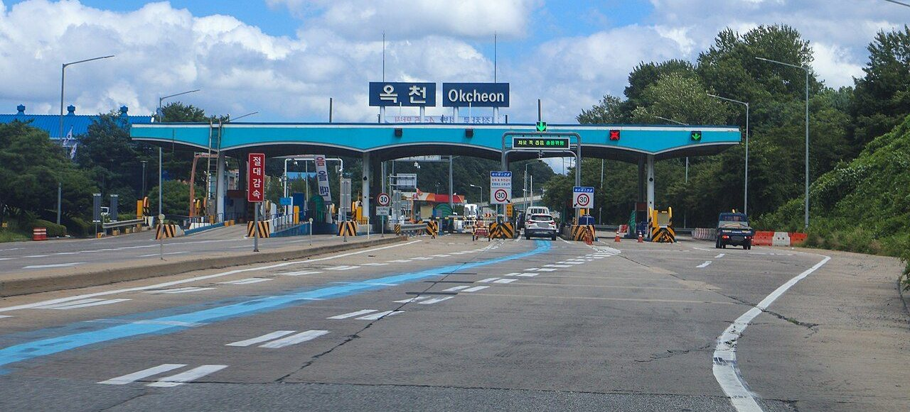
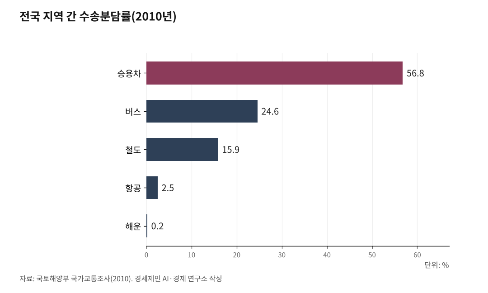

[127년 한국철도②] 탄소배출 자동차 대비 13% 철도로 모달시프트할 때
도로 편중이 부른 탄소, 기후위기 시대 철도 전환이 답
지역 간 수송 승용차 56.8%·버스 24.6%, 도로가 8할(2010년 국가교통조사)
철도 1인·km당 19g, 승용차보다 87%·항공보다 85% 적어
EU는 철도화물 50% 증대 목표… 한국은 구속력 있는 목표 없어
인하대 해양AI융합센터 김갑봉 연구교수(물류학)│한국에서는 사람도 짐도 대부분 도로로 움직인다. 사람을 철도로 옮기면 탄소 배출이 큰 폭으로 준다. 그런데도 도로 편중은 수십 년째 그대로다.

기후위기 시대에 이 구조는 모순이다. 1편에서 한국 철도가 도로에 밀려 선진국 절반 골격에 머물렀다고 짚었다. 2편은 그 편중이 부른 탄소 문제와, 도로를 철도로 옮기는 모달시프트(Modal Shift, 친환경 운송수단으로 전환하는 정책)를 다룬다.
1. 모달시프트, 왜 지금 철도인가
모달시프트는 트럭 화물이나 승용차 통행을 철도와 선박처럼 탄소를 덜 쓰는 수단으로 옮기는 정책이다. 친환경 구호에 그치지 않는다. 같은 사람, 같은 짐을 어떤 수단으로 나르느냐에 따라 탄소 배출이 크게 갈린다.
한국은 2021년 탄소중립기본법으로 2050년 탄소중립을 국가 목표로 정했다. 수송 부문은 그 목표의 핵심 전장이다. 도로가 수송을 떠안은 구조를 바꾸지 않고는 탄소중립에 닿기 어렵다. 그래서 철도가 해법으로 다시 떠오른다.

2. 도로가 8할을 나른다
한국의 수송 구조는 도로로 크게 기울었다. 국토해양부가 2010년 국가교통조사로 발표한 전국 지역 간 수송분담률을 보면 승용차 56.8%, 버스 24.6%, 철도 15.9%, 항공 2.5%, 해운 0.2%였다. 승용차와 버스를 더한 도로가 8할을 넘는다.
최근 자료도 방향이 같다. 국토교통부 교통부문수송실적보고를 보면 인·km 기준 공로(승용차·버스·택시) 수송량은 2023년 86.6%로 여객 수단 중 가장 큰 비중을 차지했다. 통계 기준과 연도가 달라도 결론은 하나다. 한국은 도로가 8할 이상을 나르는 나라다.
3. 철도는 탄소를 적게 쓴다
도로 편중이 문제인 까닭은 탄소다. 국제에너지기구(IEA) 기준 철도는 1인·km당 평균 19g의 이산화탄소를 배출한다. 여객 수단 가운데 가장 낮다.
같은 거리를 갈 때 철도는 승용차보다 약 87%, 항공보다 약 85% 적게 배출한다. 사람을 철도로 옮기면 탄소가 큰 폭으로 준다는 뜻이다.
수송의 8할을 맡은 도로가 가장 많이 배출하고, 가장 적게 배출하는 철도는 2할도 못 나른다. 한국 수송 구조의 탄소 모순이 여기 있다.
4. KTX가 보여준 전환
철도가 깔리면 사람이 옮겨 탄다는 사실은 데이터로 드러났다. 국토교통부 자료를 보면 철도 여객 수송은 2004년 전까지 연평균 3.01%씩 줄었다. 그러나 경부고속철도가 열리고 KTX가 달리면서 연평균 1.93% 늘어나는 추세로 반등했다.
항공 수요도 끌어왔다. 서울(김포)-대구 노선은 KTX 개통 뒤 탑승률이 20~30%대로 떨어져 2007년 끊겼다. 고속철도가 깔린 구간마다 항공 수요가 철도로 옮겨갔다.
빠르고 자주 다니는 철도가 깔리자 사람들은 스스로 철도를 골랐다. 모달시프트가 현실에서 작동한다는 증거다. 문제는 이 전환이 여객 일부 노선에 그쳤다는 점이다.
5. 세계는 정부 목표로 민다
다른 나라는 모달시프트를 정부 목표로 밀어붙인다. 유럽연합(EU)은 2011년 교통백서에서 300km를 넘는 도로 화물의 30%를 2030년까지 철도와 연안해운으로 옮기겠다고 정했다. 2020년 지속가능·스마트 모빌리티 전략에서는 철도 화물을 2030년까지 50% 늘리고 2050년까지 2배로 키우겠다고 밝혔다.
일본은 국토교통성이 트럭 화물을 철도와 선박으로 옮기는 모달시프트를 종합물류시책대강의 핵심 정책으로 삼았다. 다만 일본조차 쉽지 않다. 2026년 새 대강을 보면 잇단 자연재해로 화주 신뢰가 떨어져 철도 화물이 오히려 줄었다. 목표를 세운 나라도 전환이 더디다는 현실을 보여준다.
6. 한국은 어디로
한국의 자리는 더 흐릿하다. EU와 일본은 정부가 수치로 못 박은 목표를 세웠다. 한국에는 그만한 목표가 없다. 도로를 철도로 옮기겠다는 방향은 있으나, 어디까지 옮기겠다는 구속력 있는 약속이 없다.
전환이 더딘 데는 까닭이 있다. 도로가 싸게 유지되는 한 사람도 짐도 철도로 옮길 동기는 약하다. 여객은 KTX가 옮겼지만, 모달시프트의 본령인 화물은 아직 도로에 묶여 있다. 그 요금과 재정, 화물 구조는 뒤편에서 차례로 다룬다.
해법이 모든 노선을 시속 300km 고속으로 까는 것은 아니다. 여객은 빠르고 자주 다니는 철도가, 화물은 정시에 대량으로 나르는 철도가 필요하다. 속도와 용도에 맞게 철도를 나누는 일이 먼저다. 그래야 구간마다 철도가 도로를 앞선다.
다음 편에서는 그 골격, 4×4 격자망과 제5차 국가철도망 구축계획의 옥석 가리기를 다룬다.
※ 이 기사는 AI 프로그램 클로드를 활용해 작성했습니다.
참고문헌
· "교통수단별 수송분담률 발표", 국토해양부 종합교통정책과, 2010.9.3.
· "수송량 및 수송분담률", 국토교통부 교통부문수송실적보고(e-나라지표), 2025.11.26. 갱신, https://www.index.go.kr/unity/potal/main/EachDtlPageDetail.do?idx_cd=1245
· "철도여객 수송추이", 국토교통부 철도운영과(e-나라지표), 2025.3.11. 갱신, https://www.index.go.kr/unity/potal/main/EachDtlPageDetail.do?idx_cd=1249
· "이동수단별 예상 배출량(IEA 인용)", 구글 여행 고객센터, https://support.google.com/travel/answer/13571996
· "[지방은 지금] KTX에 밀린 김포-대구 국내선", 여행신문, 2007.10.31., https://www.traveltimes.co.kr/news/articleView.html?idxno=59102
· "유럽연합 교통백서(Roadmap to a Single European Transport Area)", 유럽연합 집행위원회, 2011.3.28.
· "Sustainable and Smart Mobility Strategy", 유럽연합 집행위원회(EUR-Lex), 2020.12.9., https://eur-lex.europa.eu/legal-content/EN/TXT/HTML/?uri=CELEX:52020DC0789
· "물류: 모달시프트란", 일본 국토교통성, https://www.mlit.go.jp/seisakutokatsu/freight/modalshift.html
· "종합물류시책대강(2026~2030)", 일본 경제산업성·국토교통성, 2026.3.31., https://www.meti.go.jp/press/2025/03/20260331010/20260331010-1.pdf
사진 출처
· [대표사진] LandAndTree, "Gyeongbu Expressway Okcheon IC Tollgate 20240729.jpg", 위키미디어 공용, CC0, https://commons.wikimedia.org/wiki/File:Gyeongbu_Expressway_Okcheon_IC_Tollgate_20240729.jpg
※ 이 기사는 인공지능을 활용해 작성했습니다.
관련기사
- [127년 한국철도③] 서울 가는 길은 넉넉하다… 이젠 지방끼리 잇는 망
- [127년 한국철도⑤] KTX 속도 따라 요금 현실화… 무궁화 늘려 선택권 보장
- [127년 한국철도④] 모두가 고속일 필요는 없다… 속도도 값도 등급으로 갈라야 산다
- [127년 한국철도-번외] 외국인 606만명 이용, 국제공항을 고속철도로 잇자
저작권자 © AI경세제민 무단전재 및 재배포, AI학습 및 활용 금지